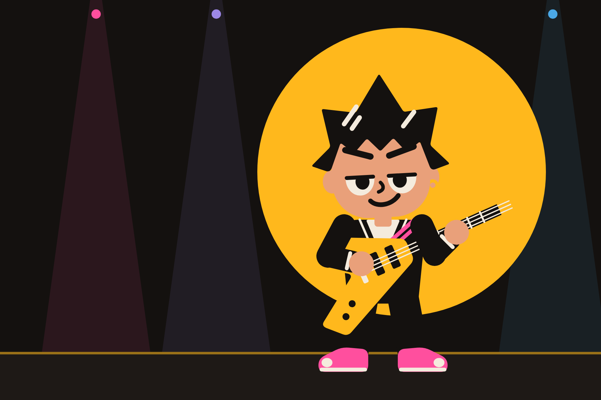

Guitar lessons that listen.
UpperScales is an iPhone app for practising guitar. You play, the microphone checks every note – right pitch, right moment, clean intonation – and tells you straight away what worked.
- Free
- No account
- No ads
For iPhone. Coming to the App Store.
Tonight's set
Everything in the app works with the guitar in your hands. Put the phone on a stand at arm's length and play.
Setlist
- Flow and Live CheckNote by note without time pressure, or to the click with up to three stars for pitch and timing.
- Chord trainer and ear trainingThe app hears whether every string rings, and plays phrases for you to play back.
- Learning pathOver 100 lessons with quizzes, technique exercises and over 50 licks from six styles.
- Songbook110 pieces with tab and accompaniment, from children's songs to Bach and metal.
- Missions and ArenaImprovise over a backing track, or race the clock on fretboard, intervals and chords.
- The rigTuner, metronome, looper, amp, tab writer, studio and songwriting.
- EncoreLoad your own amp models (NAM) and cabinets (IR) from the Files app.
Your playing stays on your iPhone.
No account, no ads, no tracking. The microphone is analysed on the device, and your progress is stored only there.
Read the privacy policy, or get help and support.